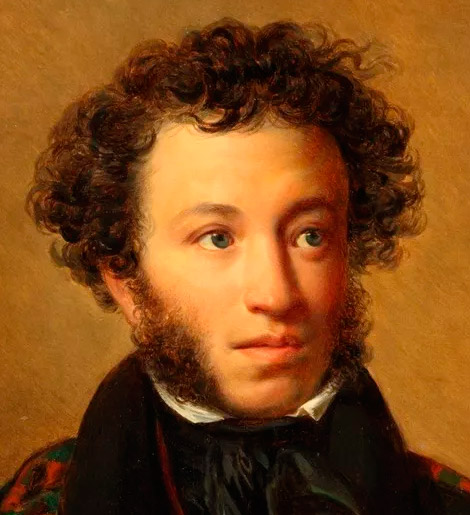

Краткая биография
Александр Сергеевич Пушкин
«Он — наше всё» — так сказал о Пушкине Аполлон Григорьев. И это действительно так. Александр Сергеевич Пушкин (1799–1837) — величайший русский поэт, основоположник современного русского литературного языка, создатель национальной литературы.
Александр Пушкин родился 6 июня 1799 года в Москве. С детства он впитывал русскую речь от няни Арины Родионовны, а в Царскосельском лицее раскрылся его поэтический талант. Уже в 15 лет он читал свои стихи на лицейском экзамене в присутствии Державина.
За свою недолгую, но яркую жизнь Пушкин создал бессмертные произведения:
- «Евгений Онегин» — «энциклопедию русской жизни»
- «Капитанская дочка»
- «Медный всадник»
- «Борис Годунов»
- Поэмы: «Руслан и Людмила», «Кавказский пленник», «Полтава», «Цыганы»
- Сказки, которые знает каждый российский ребёнок
Почему Пушкин важен для нас?
Пушкин не просто великий поэт. Он создал русский литературный язык в том виде, в каком мы говорим и пишем сегодня. Он показал, что на русском языке можно выразить самые тонкие чувства, глубокие мысли и высочайшие идеалы.
Его творчество — это гордость русской культуры, которую изучают во всём мире.